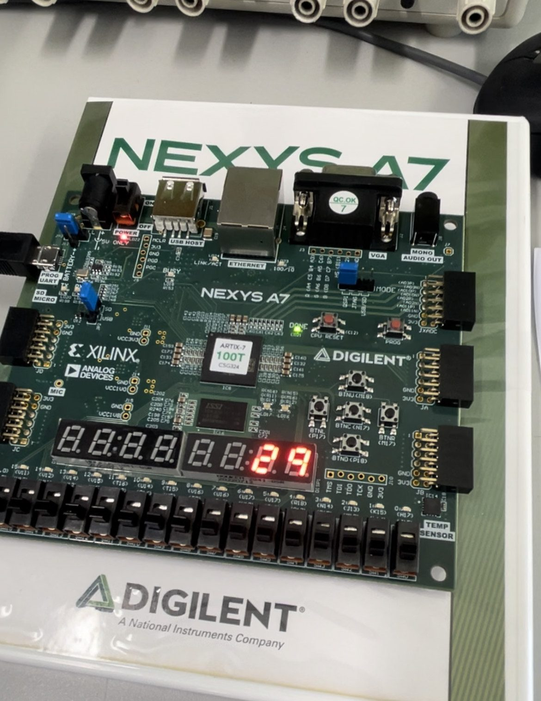

Kahu Hutton
FPGA reaction timer
March 2025. github.com/CARWHO/FPGA-Reaction-Timer · report (pdf)

A reaction timer in VHDL on a Nexys-4 DDR. A finite state machine controls the sequence, seven-segment displays show the statistics, and random delays stop the user anticipating the prompt.
- FSM in VHDL driving the timer sequence.
- LEDs, seven-segment displays, and push buttons for the interface, with error handling for early presses.
- ALU for average, best, and worst times, checked in Vivado simulation.
- Configurable test parameters and random delay generation.
Back